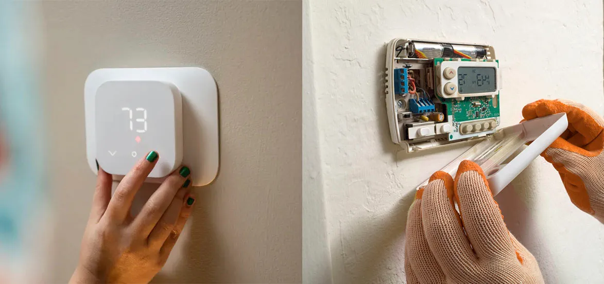

Consequences Of Improper Installation Of An AC Thermostat

As summers are approaching, the need for an air conditioner at home will also increase. You cannot imagine a single day in this scorching heat of summers without air conditioners. An air conditioner has become an essential need in everyone's life. Electrical appliances like air conditioners save your lives, but it is equally important to take care of them by getting them repaired and checked from time to time.
However, if you do its services on your own, there are several chances of incorrect fixtures. One of the main issues that you may face is the improper installation of an air conditioner thermostat. This is not at all good and may result in several problems for you. Therefore, you need to get your AC thermostat installed by a professional only. In this regard, you can hire the professional services of AC thermostat installation at an affordable range and get optimum results.
Major Impacts Of Improper Installation Of An AC Thermostat
Malfunctioning
One of the major issues with your AC thermostat getting improperly fixed is malfunctioning. It can easily damage your electrical appliance. It is not at all good outcome, as you will have to spend a lot of money on it. If you don't even talk about money, then also it can be risky for you as a malfunctioned electrical appliance is dangerous and can even cause a short circuit. Hence, you have to get it fixed by professionals only so that they can properly install your AC thermostat. Therefore, you do not face any issues like the malfunctioning of electrical appliances. Also, there are chances that after an electrical appliance gets malfunctioned, you might also have to replace and get a new one which will also cost a lot of money.
Electric Shock
An improperly installed AC thermostat can also give you an electric shock. There are chances that you may just touch it and get an electric shock, and it may even put your life in risk. So, do not take risk for fixing air conditioner or installing thermostat on your own. It is best to get it fixed by the professional thermostat installation company only.
Blowing A Circuit Breaker
Apart from providing you above mentioned consequences, an improperly installed AC thermostat may also become a reason for your circuit getting damaged. So, it can be dangerous for you as well as your electrical appliances. It can even result in short-circuiting, and it may also leave you with no other option than to get it repaired all over again. It may also ask for a replacement which will ask for a lot of money. Not only this, but it may also ruin your whole house's wiring, which will cause a lot of issues. So, do not take any headaches. Call experts for your AC thermostat installation.
Wiring Concern
As we all know, electrical appliances are connected to wires. So, if there is an issue with electrical appliances or if you will take the risk of fixing or installing your AC thermostat on your own, then there are high chances of it getting damaged. It may create many issues in your house wiring that can interrupt your other works. It will cost you a lot of money, and it may also possess risk and danger. For this reason, take care of this thing and always hire experienced technicians for thermostat installation services only to fix this issue. It is their duty, and they know how to work on everything.
No Cooling
The main work of an air conditioner is to cool down the surroundings. But if you improperly install your AC thermostat, it will not cool down your surroundings. As a result, it will take so much time. It may take even hours to cool down the surroundings, while an air conditioner with a properly installed thermostat may do the same work in minutes. For this reason, do not let this happen with your air conditioner and take every possible measure to get it fixed by a professional thermostat installation company only. They are experienced in their work, and they know how all these electrical appliances work and what measures they have to take.
AC May Get Damaged
To save money by not calling the thermostat installation company and fixing your AC thermostat on your own, you may end up paying huge bills. It may happen because your AC is getting damaged. It is crucial to have a properly installed thermostat, and if you do not install it properly, it may damage your air conditioner as well. Then there are chances that it will not be repaired, then you will have to replace it and then it will cost you a lot of bills. Therefore, do not think twice and get it installed from a legitimate company only.
Possesses Risk For Future Problems
If you do not get your AC thermostat properly installed, then as a consequence, your AC may face minor issues. Thus, there may be a risk for future problems. This is not good for you as it will pose a health risk every time you turn your air conditioner on. There are chances that it may stop cooling down its surroundings, or it may create circuit-breaking issues. That is why it is not safe for anyone, and you should take care of it. Electrical appliances like air conditioners are not at all safe, and you need to get them repaired as well as maintain them from time to time.
Water Leakage
As you all know, whenever the air conditioner works, it gives out hot air from the backside. It happens because the air conditioners convert all the hotness into cool air and produce hot air for the same. If you do not get your AC thermostat properly installed, then there are chances that it may not let all this hot air go out so that it comes out in the form of water. It will lead to water leakage, and it may come out from the front window. It may damage your air conditioners, and hence, you should get it repaired and look into this matter by considering it a priority.
The Rise In Electricity Bills
If you poorly install your AC thermostat, there are chances of causing problems with your electricity bills. Hence, you may have to pay huge electricity bills, which will put hole in your pockets. Therefore, do not let this happen and get your AC thermostat fixed as soon as possible by calling licensed companies for the same.
Conclusion
As discussed, all the electrical appliances, including air conditioners, are very fragile and it can become a reason for causing problems for you. Therefore, you need to get it repaired as well as maintained from time to time. Just to save a little amount of money, do not think of fixing such things at your home and always call professional companies for this. We offer professional thermostat installation services at your convenience. You can even check our reviews and know what our customers have to say about the deliverables.